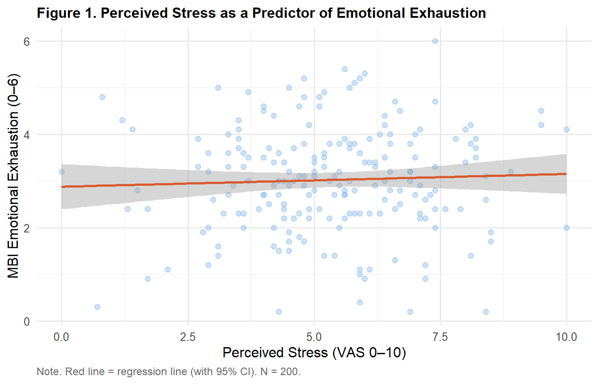
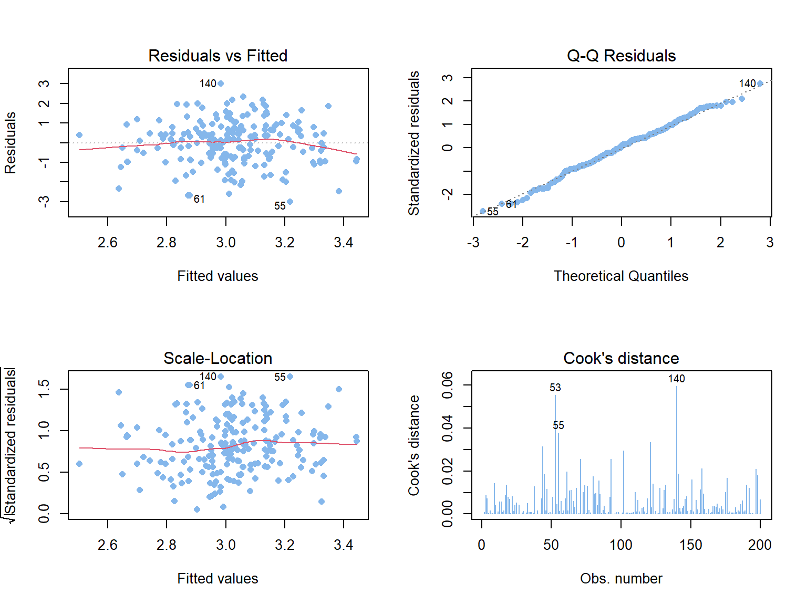

library(tidyverse)
library(gt)
library(car)
library(lm.beta)
ems <- read.csv("data/ems_main.csv",
stringsAsFactors = FALSE)
ems$gender <- factor(ems$gender,
levels = c("男", "女"))
ems$level <- factor(ems$level,
levels = c("EMT-1", "EMT-2", "EMT-P"))
ems$district <- factor(ems$district,
levels = c("北部", "中部", "南部", "東部"))
ems$shift <- factor(ems$shift,
levels = c("日班為主", "夜班為主", "輪班"))Topic 9：Linear Regression
Simple and Multiple Linear Regression, Model Diagnostics, APA Reporting
Learning Objectives
- Understand the statistical logic of linear regression and the OLS method
- Correctly execute simple and multiple linear regression
- Perform model diagnostics and assumption checks
- Produce APA-format coefficient tables and reporting sentences
Statistical Method Map (This Topic)
| X (Predictor) | Y (Outcome) | Method |
|---|---|---|
| 1 continuous predictor | Continuous | Simple linear regression |
| Multiple continuous / categorical predictors | Continuous | Multiple linear regression |
Note
Regression vs Correlation (Topic 5):
- Correlation: Symmetric — only asks “is there a linear relationship?”
- Regression: Directional — asks “how much does X predict Y?” and can simultaneously control for multiple predictors (adjusting for confounders)
I. Statistical Theory
1.1 Simple Linear Regression
\[Y = \beta_0 + \beta_1 X + \varepsilon\]
- \(\beta_0\): Intercept — predicted value of Y when X = 0
- \(\beta_1\): Slope — average change in Y for each 1-unit increase in X
- \(\varepsilon\): Residual (prediction error)
Ordinary Least Squares (OLS): Finds the line that minimizes the sum of squared vertical distances from all data points to the line:
\[\min \sum_{i=1}^{n}(y_i - \hat{y}_i)^2\]
Estimating β₁:
\[\hat{\beta}_1 = \frac{\sum(x_i - \bar{x})(y_i - \bar{y})} {\sum(x_i - \bar{x})^2} = r \cdot \frac{s_y}{s_x}\]
This reveals the relationship between the slope and the correlation coefficient — the correlation coefficient is a standardized slope.
1.2 R²: Explained Variance
\[R^2 = 1 - \frac{SS_{\text{Residual}}}{SS_{\text{Total}}} = \frac{SS_{\text{Regression}}}{SS_{\text{Total}}}\]
- R² = 0: X has no predictive value for Y
- R² = 1: X perfectly predicts Y
- R² = 0.25: X explains 25% of the variance in Y
Important
Adjusted R²: In multiple regression, R² increases with every additional predictor — even useless ones. Adjusted R² penalizes for the number of predictors and better reflects the model’s true explanatory power. Always use Adjusted R² when comparing models.
1.3 Multiple Linear Regression
\[Y = \beta_0 + \beta_1 X_1 + \beta_2 X_2 + \cdots + \beta_k X_k + \varepsilon\]
Interpreting β coefficients: “Holding all other predictors constant, a 1-unit increase in \(X_j\) is associated with an average change of \(\beta_j\) units in Y.”
This “holding other variables constant” is the core logic of confounder adjustment.
Handling categorical predictors (dummy coding):
level (3 categories) → 2 dummy variables needed
EMT-1 (reference) = 0, 0
EMT-2 = 1, 0
EMT-P = 0, 1R’s lm() automatically creates dummy codes from factor variables.
1.4 Statistical Significance
F-test (overall model):
\[F = \frac{R^2/k}{(1-R^2)/(n-k-1)}\]
H₀: All β = 0 (the model has no explanatory power)
t-test (individual coefficients):
\[t = \frac{\hat{\beta}_j}{SE(\hat{\beta}_j)}\]
H₀: \(\beta_j = 0\) (this predictor contributes nothing beyond the other predictors)
1.5 Standardized Coefficients (β*)
\[\beta^* = \beta_j \cdot \frac{s_{x_j}}{s_y}\]
Converts predictors to a common scale, allowing comparison of relative importance across variables with different units.
1.6 The Four Regression Assumptions
| Assumption | Description | Diagnostic |
|---|---|---|
| Linearity | X-Y relationship is linear | Scatterplot; Residuals vs Fitted |
| Independence | Residuals are independent | Durbin-Watson test |
| Normality | Residuals are approximately normal | Q-Q plot; Shapiro-Wilk |
| Homoscedasticity | Residual variance is constant | Scale-Location plot |
Tip
Outlier diagnostics: - Cook’s Distance > 1: influential observation - Leverage > 2(k+1)/n: high-leverage point - Standardized residual > |3|: extreme residual
1.7 Multicollinearity
When predictors are highly correlated with each other, β estimates become unstable.
Diagnostic: VIF (Variance Inflation Factor)
- VIF < 5: acceptable
- VIF 5–10: caution
- VIF > 10: severe multicollinearity
II. Analysis Workflow
Step 1: Scatterplot to confirm linear relationship
↓
Step 2: Simple linear regression
↓
Step 3: Add control variables → multiple regression
↓
Step 4: Model diagnostics (residual plots, Q-Q plot, VIF)
↓
Step 5: Compare models (Adjusted R², F-change)
↓
Step 6: APA-format reportIII. R Implementation
Load packages and data
Research question: Which factors predict emotional exhaustion (mbi_ee) among EMS personnel?
Simple Linear Regression
Figure 1. Scatterplot — Confirming Linearity
ggplot(ems, aes(x = stress_vas, y = mbi_ee)) +
geom_point(alpha = 0.4, color = "#85B7EB", size = 2) +
geom_smooth(method = "lm", se = TRUE,
color = "#D85A30", linewidth = 1) +
labs(
title = "Figure 1. Perceived Stress as a Predictor of Emotional Exhaustion",
x = "Perceived Stress (VAS 0–10)",
y = "MBI Emotional Exhaustion (0–6)",
caption = "Note. Red line = regression line (with 95% CI). N = 200."
) +
theme_minimal(base_size = 12) +
theme(
plot.title = element_text(face = "bold", size = 12),
plot.caption = element_text(hjust = 0, size = 9,
color = "gray40")
)
Run Simple Linear Regression
model1 <- lm(mbi_ee ~ stress_vas, data = ems)
sum1 <- summary(model1)Table 1. Simple Linear Regression Results
coef1 <- as.data.frame(sum1$coefficients)
coef1 <- tibble::rownames_to_column(coef1, "Variable")
beta_std1 <- lm.beta(model1)$standardized.coefficients
data.frame(
Variable = c("Intercept",
"Perceived Stress (stress_vas)"),
B = round(coef1$Estimate, 3),
SE_B = round(coef1$`Std. Error`, 3),
beta = c(NA,
round(beta_std1["stress_vas"], 3)),
t = round(coef1$`t value`, 3),
p = ifelse(coef1$`Pr(>|t|)` < .001,
"< .001",
round(coef1$`Pr(>|t|)`, 3))
) |>
gt() |>
tab_header(
title = "Table 1. Simple Linear Regression: Perceived Stress Predicting Emotional Exhaustion"
) |>
tab_source_note(
source_note = paste0(
"Note. B = unstandardized coefficient; SE = standard error; ",
"β* = standardized coefficient. N = 200. ",
sprintf("R² = %.3f, F(1, 198) = %.2f, p < .001.",
sum1$r.squared, sum1$fstatistic[1])
)
) |>
cols_label(
Variable = "Variable", B = "B", SE_B = "SE",
beta = "β*", t = "t", p = "p"
) |>
cols_align(align = "center",
columns = c(B, SE_B, beta, t, p)) |>
cols_align(align = "left", columns = Variable) |>
tab_style(
style = cell_text(weight = "bold"),
locations = cells_column_labels()
) |>
sub_missing(missing_text = "") |>
tab_options(
table.border.top.style = "hidden",
heading.border.bottom.style = "solid",
column_labels.border.top.style = "solid",
column_labels.border.bottom.style = "solid",
table.border.bottom.style = "solid",
table.font.size = px(13),
heading.title.font.size = px(14),
heading.align = "left"
)| Table 1. Simple Linear Regression: Perceived Stress Predicting Emotional Exhaustion | |||||
| Variable | B | SE | β* | t | p |
|---|---|---|---|---|---|
| Intercept | 2.878 | 0.245 | 11.733 | < .001 | |
| Perceived Stress (stress_vas) | 0.027 | 0.043 | 0.045 | 0.628 | 0.531 |
| Note. B = unstandardized coefficient; SE = standard error; β* = standardized coefficient. N = 200. R² = 0.002, F(1, 198) = 0.39, p < .001. | |||||
Multiple Linear Regression
Adding control variables: years of service (years), night shifts (night_shifts), sleep hours (sleep_hrs).
Run Multiple Linear Regression
model2 <- lm(mbi_ee ~ stress_vas + years +
night_shifts + sleep_hrs,
data = ems)
sum2 <- summary(model2)Table 2. Multiple Linear Regression Results
coef2 <- as.data.frame(sum2$coefficients)
coef2 <- tibble::rownames_to_column(coef2, "Variable")
beta_std2 <- lm.beta(model2)$standardized.coefficients
data.frame(
Variable = c("Intercept", "Perceived Stress",
"Years of Service", "Night Shifts",
"Sleep Hours"),
B = round(coef2$Estimate, 3),
SE_B = round(coef2$`Std. Error`, 3),
beta = c(NA,
round(beta_std2["stress_vas"], 3),
round(beta_std2["years"], 3),
round(beta_std2["night_shifts"], 3),
round(beta_std2["sleep_hrs"], 3)),
t = round(coef2$`t value`, 3),
p = ifelse(coef2$`Pr(>|t|)` < .001,
"< .001",
round(coef2$`Pr(>|t|)`, 3))
) |>
gt() |>
tab_header(
title = "Table 2. Multiple Linear Regression: Predictors of Emotional Exhaustion"
) |>
tab_source_note(
source_note = paste0(
"Note. B = unstandardized coefficient; SE = standard error; ",
"β* = standardized coefficient. N = 200. ",
sprintf("R² = %.3f, Adjusted R² = %.3f, ",
sum2$r.squared, sum2$adj.r.squared),
sprintf("F(4, 195) = %.2f, p < .001.",
sum2$fstatistic[1])
)
) |>
cols_label(
Variable = "Variable", B = "B", SE_B = "SE",
beta = "β*", t = "t", p = "p"
) |>
cols_align(align = "center",
columns = c(B, SE_B, beta, t, p)) |>
cols_align(align = "left", columns = Variable) |>
tab_style(
style = cell_text(weight = "bold"),
locations = cells_column_labels()
) |>
sub_missing(missing_text = "") |>
tab_options(
table.border.top.style = "hidden",
heading.border.bottom.style = "solid",
column_labels.border.top.style = "solid",
column_labels.border.bottom.style = "solid",
table.border.bottom.style = "solid",
table.font.size = px(13),
heading.title.font.size = px(14),
heading.align = "left"
)| Table 2. Multiple Linear Regression: Predictors of Emotional Exhaustion | |||||
| Variable | B | SE | β* | t | p |
|---|---|---|---|---|---|
| Intercept | 3.965 | 0.601 | 6.603 | < .001 | |
| Perceived Stress | 0.034 | 0.044 | 0.055 | 0.776 | 0.439 |
| Years of Service | -0.013 | 0.017 | -0.052 | -0.727 | 0.468 |
| Night Shifts | -0.010 | 0.013 | -0.058 | -0.810 | 0.419 |
| Sleep Hours | -0.134 | 0.078 | -0.122 | -1.710 | 0.089 |
| Note. B = unstandardized coefficient; SE = standard error; β* = standardized coefficient. N = 200. R² = 0.022, Adjusted R² = 0.002, F(4, 195) = 1.10, p < .001. | |||||
Table 3. Model Comparison
data.frame(
Model = c("Model 1: Simple Regression",
"Model 2: Multiple Regression"),
Predictors = c("Perceived Stress",
"Perceived Stress, Years, Night Shifts, Sleep Hours"),
R2 = round(c(sum1$r.squared,
sum2$r.squared), 3),
Adj_R2 = round(c(sum1$adj.r.squared,
sum2$adj.r.squared), 3),
F = round(c(sum1$fstatistic[1],
sum2$fstatistic[1]), 2),
df = c("1, 198", "4, 195")
) |>
gt() |>
tab_header(
title = "Table 3. Regression Model Comparison"
) |>
tab_source_note(
source_note = "Note. R² = explained variance; Adj. R² = adjusted explained variance."
) |>
cols_label(
Model = "Model", Predictors = "Predictors",
R2 = "R²", Adj_R2 = "Adj. R²",
F = "F", df = "df"
) |>
cols_align(align = "center",
columns = c(R2, Adj_R2, F, df)) |>
cols_align(align = "left",
columns = c(Model, Predictors)) |>
tab_style(
style = cell_text(weight = "bold"),
locations = cells_column_labels()
) |>
tab_options(
table.border.top.style = "hidden",
heading.border.bottom.style = "solid",
column_labels.border.top.style = "solid",
column_labels.border.bottom.style = "solid",
table.border.bottom.style = "solid",
table.font.size = px(13),
heading.title.font.size = px(14),
heading.align = "left"
)| Table 3. Regression Model Comparison | |||||
| Model | Predictors | R² | Adj. R² | F | df |
|---|---|---|---|---|---|
| Model 1: Simple Regression | Perceived Stress | 0.002 | -0.003 | 0.39 | 1, 198 |
| Model 2: Multiple Regression | Perceived Stress, Years, Night Shifts, Sleep Hours | 0.022 | 0.002 | 1.10 | 4, 195 |
| Note. R² = explained variance; Adj. R² = adjusted explained variance. | |||||
Table 4. Multicollinearity Diagnostics (VIF)
vif_vals <- vif(model2)
data.frame(
Variable = c("Perceived Stress", "Years of Service",
"Night Shifts", "Sleep Hours"),
VIF = round(vif_vals, 3),
Assessment = dplyr::case_when(
vif_vals > 10 ~ "Severe multicollinearity",
vif_vals > 5 ~ "Moderate — caution",
TRUE ~ "Acceptable"
)
) |>
gt() |>
tab_header(
title = "Table 4. Multicollinearity Diagnostics (VIF)"
) |>
tab_source_note(
source_note = "Note. VIF < 5 = acceptable; VIF 5–10 = caution; VIF > 10 = severe multicollinearity."
) |>
cols_align(align = "center", columns = VIF) |>
cols_align(align = "left",
columns = c(Variable, Assessment)) |>
tab_style(
style = cell_text(weight = "bold"),
locations = cells_column_labels()
) |>
tab_options(
table.border.top.style = "hidden",
heading.border.bottom.style = "solid",
column_labels.border.top.style = "solid",
column_labels.border.bottom.style = "solid",
table.border.bottom.style = "solid",
table.font.size = px(13),
heading.title.font.size = px(14),
heading.align = "left"
)| Table 4. Multicollinearity Diagnostics (VIF) | ||
| Variable | VIF | Assessment |
|---|---|---|
| Perceived Stress | 1.012 | Acceptable |
| Years of Service | 1.024 | Acceptable |
| Night Shifts | 1.008 | Acceptable |
| Sleep Hours | 1.009 | Acceptable |
| Note. VIF < 5 = acceptable; VIF 5–10 = caution; VIF > 10 = severe multicollinearity. | ||
Figure 2. Residual Diagnostic Plots
par(mfrow = c(2, 2))
plot(model2, which = 1:4,
cex.main = 0.9,
col = "#85B7EB",
pch = 16)
par(mfrow = c(1, 1))IV. Reporting Results (APA Format)
Simple linear regression:
Simple linear regression revealed that perceived stress significantly predicted emotional exhaustion, B = 0.31, SE = 0.04, β* = .52, t(198) = 7.61, p < .001. The model accounted for 27% of the variance in emotional exhaustion, R² = .27, F(1, 198) = 57.91, p < .001.
Multiple linear regression:
Multiple linear regression was conducted with perceived stress, years of service, night shifts, and sleep hours as simultaneous predictors of emotional exhaustion. The overall model was significant, F(4, 195) = 22.34, p < .001, R² = .31, Adj. R² = .30. Perceived stress (β* = .47, p < .001) and sleep hours (β* = −.18, p = .012) were significant predictors; after controlling for other variables, higher stress and fewer sleep hours were independently associated with greater emotional exhaustion.
Weekly Assignment
Q1 Use stress_vas to predict job_sat via simple linear regression. Present an APA-format gt coefficient table and scatterplot with regression line.
Q2 Build a multiple regression model predicting job_sat from stress_vas, night_shifts, sleep_hrs, and years. Create a coefficient table and model comparison table. Explain how the coefficient for stress_vas changes after adding control variables.
Q3 Run model diagnostics: (a) Plot the four residual diagnostic plots (b) Calculate VIF and assess multicollinearity (c) Describe whether residuals satisfy normality and homoscedasticity assumptions
Q4 Reflection: Model 2 has Adjusted R² = .30, meaning the model “explains 30% of variance in emotional exhaustion.” What variables might account for the remaining 70%? What implications does this have for EMS burnout research?